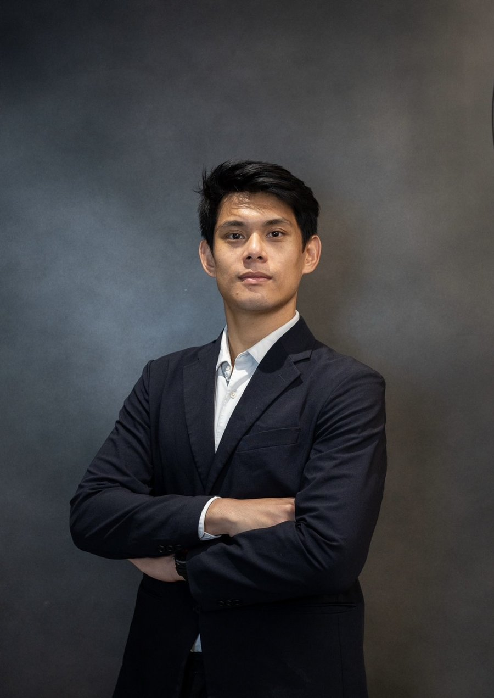
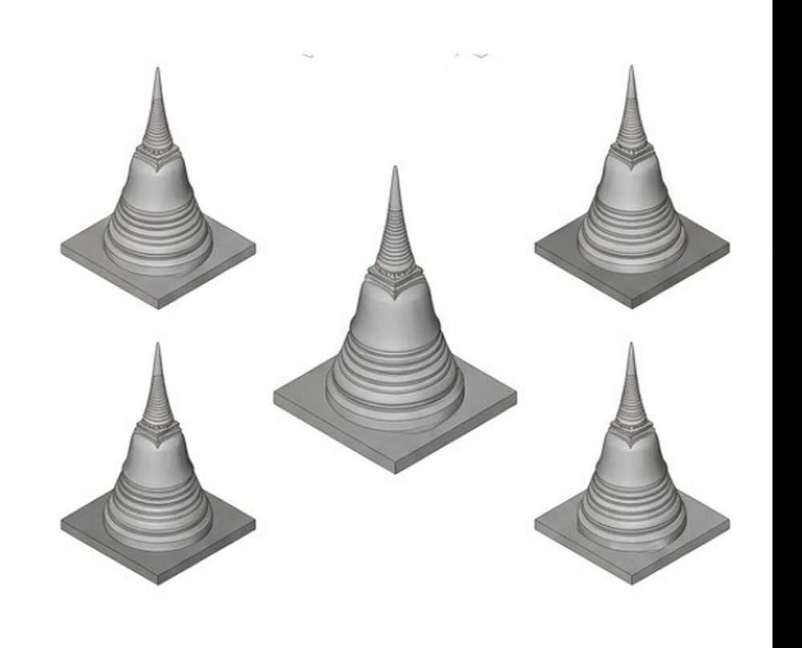
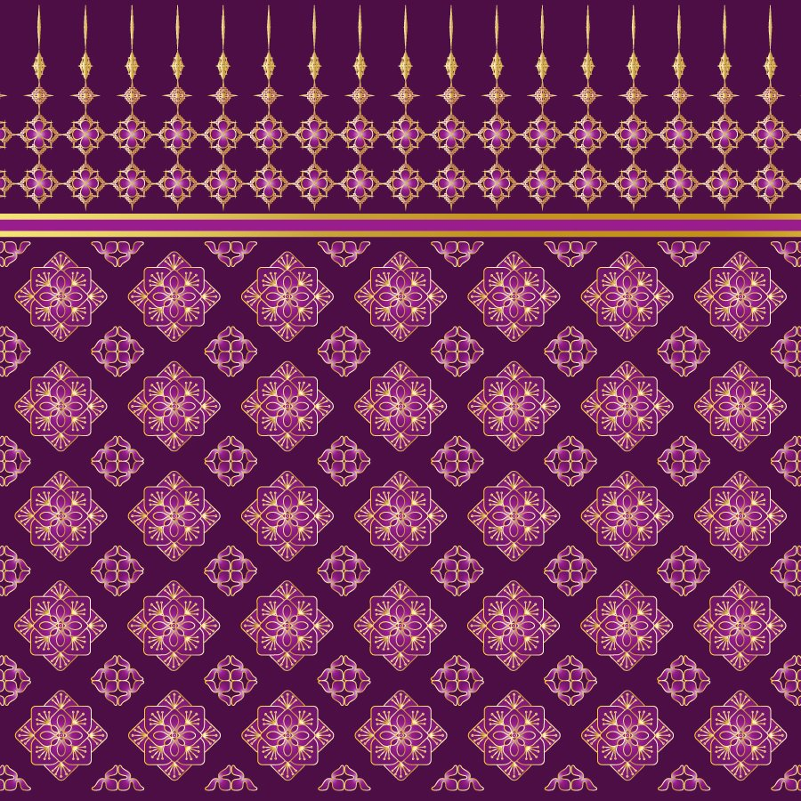

Ph.D.
Civil Engineering — Tokyo Institute of Technology
MEXT Japanese Government Scholar.
Dissertation: “Subsurface Crack Detection on Bridge Decks using Eddy Current Technique.”
Structural Engineer · Lecturer · Ph.D.
A structural engineer teaching at the Department of Architecture — reading buildings and bridges through measurement, computation and data.

Nitipong Praphaphankul is a structural engineer and full-time Lecturer at the Department of Architecture, Chulalongkorn University. He holds a Ph.D. in Civil Engineering from the Tokyo Institute of Technology, completed as a MEXT Japanese Government Scholar.
Teaching structure inside a school of architecture places his work at a deliberate intersection — structural engineering, computation, and architectural design. His research spans subsurface crack detection with eddy current techniques, bridge monitoring through UAV-based photogrammetry and unsupervised machine learning, and damage assessment of CFRP-strengthened structures: work aimed at turning the physical condition of ageing infrastructure into signals that engineers and designers can act on.
Full-time Lecturer, Department of Architecture. Teaching and research in structural engineering, non-destructive evaluation and data-driven condition assessment; principal investigator on grants in composite materials and NDT.
Research Assistant. Continued experimental and numerical work on eddy current inspection of steel bridge decks and remote sensing for bridge movement monitoring.
Intern, Assistant Engineer. Bridge inspection and structural assessment practice in a consulting environment.
Intern, Structural QC Engineer. Quality control of reinforced concrete works on residential developments.
Intern, Site Engineer. Site supervision and construction methods on large-scale infrastructure works.
Civil Engineering — Tokyo Institute of Technology
MEXT Japanese Government Scholar.
Dissertation: “Subsurface Crack Detection on Bridge Decks using Eddy Current Technique.”
Civil Engineering — Tokyo Institute of Technology
Thesis: “Assessment of Bridge Structure Displacement using Structure from Motion” — UAV photogrammetry for displacement measurement.
Civil Engineering — Chulalongkorn University
Bachelor of Engineering with Honors, Faculty of Engineering, Bangkok.
Development of signal-processing pipelines coupled with non-destructive testing to detect and characterise damage in carbon-fibre-reinforced polymer composites used for structural strengthening.
A joint project between Chulalongkorn University and the Institute of Science Tokyo, extending inspection methods for CFRP-strengthened members across both laboratories.
Sustainable hollow structural elements developed with the Center of Excellence in Social Design and the Architectural Intelligence (A.I.) Research Group, Faculty of Architecture, Chulalongkorn University.
Prefabricated timber-based panel systems for hybrid building construction, developed under the BCG Economy Framework.
An open data platform supporting commercial and tourism districts, delivered through a Thai–Japanese research collaboration.
Exploring quantum annealing as a search engine for the discrete geometry of self-supporting reciprocal frames — where classical solvers drown in combinatorics.
Recasting classical truss sizing as a problem a quantum annealer can natively solve, with a statistically controlled benchmark against the metaheuristics engineers use today.
Asking whether quantum-native representations of eddy-current signals can see subsurface damage in steel bridge decks that classical features miss.

study rendersCentury-old monochrome photographs are often the only record of Thailand's lost or altered pagodas. This project turns single archival views into measurable 3D geometry for conservation and archives.

Translating handwoven Thai pattern into a machine-readable footprint that a digital Jacquard loom can reproduce — preserving the pattern independently of the hands that made it.
A statistical look at how everyday choices in ultrasonic testing practice can tip quality classifications — and repair decisions — one way or the other.
Interested in any of these directions?
Manuscripts under preparation; specifics shared in conversation.
Zain, M., Kupwiwat, C., Prasittisopin, L., Praphaphankul, N., Kaewunruen, S., & Zaidi, M. A. A. (2026). Framework for Developing Resistivity Models to Identify Potential Safety Threats in Embankment Dams. Engineered Science, 39, 2054.
DOI ↗10.30919/es2054
Praphaphankul, N., Koohathong, P., Tiprak, K., Lenwari, A., & Thongchom, C. (2026). Axial behavior of hollow concrete columns with GFRP and hybrid reinforcement. Structures, 91, 112550. Elsevier.
DOI ↗10.1016/j.istruc.2026.112550
Praphaphankul, N., Prayoonwet, W., Tiprak, K., Akutsu, A., & Sasaki, E. (2026). Accessible remote sensing of bridge movement monitoring with UAV-based SfM photogrammetry and unsupervised machine learning. Structure and Infrastructure Engineering, 1–26. Taylor & Francis.
DOI ↗10.1080/15732479.2026.2698097
Chakrathok, P., et al., including Praphaphankul, N. (2025). Flexural Behavior of Concrete Beams Reinforced with GFRP Bars under High Temperature. 30th National Convention on Civil Engineering.
Praphaphankul, N., Akutsu, A., & Sasaki, E. (2024). Numerical study of phase space analysis for the development of subsurface crack detection method using pulsed eddy current. Structure and Infrastructure Engineering, 1–21.
DOI ↗10.1080/15732479.2024.2413637
Praphaphankul, N., Akutsu, A., & Sasaki, E. (2024). Enhancing Subsurface Crack Detection in Orthotropic Steel Decks. EASEC-18, 453–460. Springer.
DOI ↗10.1007/978-981-96-9917-9_59
Praphaphankul, N. (2024). Enhancing root-deck crack detection in orthotropic steel decks. IABSE Symposium Manchester 2024.
DOI ↗10.2749/manchester.2024.0822
Praphaphankul, N., Akutsu, A., & Sasaki, E. (2023). Numerical study for development of subsurface crack detection using pulsed eddy current and swept frequency eddy current. Structure and Infrastructure Engineering, 1–16.
DOI ↗10.1080/15732479.2023.2218351
Thongchom, C., et al., including Praphaphankul, N. (2023). Experimental Investigation on Post-Fire Mechanical Properties of GFRP Rebars. Polymers.
DOI ↗10.3390/polym15132925
No items in this category.
Associate Civil Engineer License (COE Thailand) · DeepLearning.AI Deep Learning Specialization with 5 further TensorFlow / machine learning certificates · RPA certifications.
Vice President, Thai Students' Association in Japan (TSAJ, 2023) · International Student Representative, Tokyo Institute of Technology (2023).